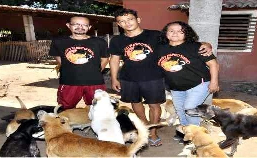

O Abrigo Mascotinho nasceu da necessidade urgente de ajudar animais de rua que viviam em condições extremamente precárias. Mesmo sem recursos, não podíamos fechar os olhos diante de tanto sofrimento. Eram caixas com filhotes abandonados nas calçadas, cães idosos vagando famintos, animais atropelados agonizando por dias sem receber socorro. Diante dessa realidade, fomos acolhendo cada vida que ninguém mais estava disposto a ajudar.

No abrigo, eles encontraram alimento, abrigo seguro e cuidados básicos — algo que jamais teriam sobrevivendo nas ruas. Com o tempo, mesmo recebendo apenas os casos mais graves, o número de animais resgatados aumentou rapidamente. O abandono é constante, e muitos desses animais simplesmente não conseguiriam sobreviver sozinhos. Assim, não tivemos escolha: assumimos oficialmente nossa função como abrigo e passamos a dedicar nossas vidas inteiramente a eles. Para conseguir apoio, criamos perfis nas redes sociais e buscamos colaboradores que pudessem nos ajudar a manter essa missão de salvar vidas. Depois de muitos anos pagando aluguel, finalmente conquistamos nossa sede própria — um espaço doado e construído especialmente para os animais, uma casa que será sempre deles.
O trabalho no abrigo é diário e incansável. A limpeza de canis e gatis, a troca da água, a higienização de utensílios, a administração de medicamentos e tantos outros cuidados fazem parte da rotina para garantir o bem-estar de todos os animais resgatados. A demanda por atendimento veterinário também é enorme. Como nossa prioridade são animais de rua doentes ou feridos, é essencial oferecer assistência adequada. São muitos casos graves e urgentes: cães atropelados, gatos cegos, animais com câncer, fêmeas com dificuldades no parto, entre tantos outros que, sem ajuda, teriam um fim cruel nas ruas. Porém, todos esses procedimentos têm custos elevados e representam um grande desafio financeiro. A maior dificuldade, no entanto, é a alimentação. Hoje, mais de 500 animais dependem do abrigo todos os dias. Consumimos duas sacas de ração para cães e uma para gatos diariamente, além de alimentos especiais como leite para filhotes e misturas para idosos ou animais debilitados. É um gasto muito alto e constante.

O abrigo não recebe nenhum tipo de auxílio do poder público. Tudo o que fazemos só é possível graças às doações, à venda de roupas usadas no nosso bazar, e às rifas e sorteios que organizamos. Vivemos um dia de cada vez, enfrentando muitas dificuldades e trabalhando com recursos limitados. Lutamos por cada um desses animais, dedicando nosso tempo, nosso esforço e nossas vidas. Contamos com a solidariedade das pessoas da cidade, que, mesmo com pouco, doam o que podem — seja ração, roupas ou objetos para o bazar. É uma verdadeira corrente do bem, formada por aqueles que acreditam na vida e se importam com quem não tem mais ninguém.